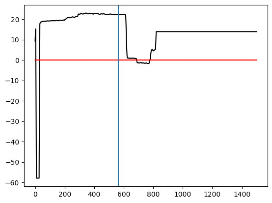

[1]:
# Root path and directory
import sys
import os
ROOT_PATH = "E:/ADS/python/ams/isaccade"
os.chdir(ROOT_PATH)
[2]:
# Packages
import h5py as hy
import numpy as np
import pandas as pd
import scipy.io as spy
import utils.funcs.readMatfiles as readmat
[3]:
# Folders and File path
ROOT_PATH = "E:/ADS/python/ams/isaccade"
get_data = "data"
task = "MG"
recordings = "fef"
analysis = "sessions"
subject = "m1"
session_date = "Apr26b"
fpath = "/".join([ROOT_PATH,get_data,task,recordings,analysis,subject,session_date])
print(fpath)
E:/ADS/python/ams/isaccade/data/MG/fef/sessions/m1/Apr26b
[4]:
# File details
#file = "DETAILS_all.mat"
file = "MG_Jaggu_bkl.mat"
#file = "Neuron.mat"
#file = "Neuron_MERGED.mat"
#file = "UNITS_all.mat"
filename = fpath+'/'+file
filename
[4]:
'E:/ADS/python/ams/isaccade/data/MG/fef/sessions/m1/Apr26b/MG_Jaggu_bkl.mat'
[5]:
# Reading mat file
data = readmat.load_data(filename)
Opening mat file v7.0 Path: E:/ADS/python/ams/isaccade/data/MG/fef/sessions/m1/Apr26b/MG_Jaggu_bkl.mat
| Variables | Type | Fields | Dim | |
|---|---|---|---|---|
| 0 | Events | dict | [Abort_, Bot_, Correct_, EmStart_, Eot_, FixSp... | 10 |
| 1 | Eye_ | dict | [NormX_, NormY_, Saccade_] | 3 |
| 2 | Infos_ | ndarray | float64 | (93, 59) |
| 3 | Raw_ | dict | [data] | 1 |
| 4 | Result | dict | [Correct, Success_eye, Success_eye2, Wrong_eye... | 5 |
| 5 | Timings_ | dict | [Fix_on_, Go_, Target_, Trig_, Trigger_] | 5 |
| 6 | Trialinfo_ | dict | [ht, pos, result] | 3 |
[6]:
# A. Event marker for each trial (Tempo Reflecting system)
Events_per_trial = ['EmStart_','Bot_','FixSpotOn_','Trigger_','Target_','FixSpotOff_','Correct_','Reward_','Abort_','Eot_']
readmat.show_info(data['Events'])
Events = readmat.dict2array(data['Events'])
Events[Events_per_trial]
| Variables | Type | Fields | Dim | |
|---|---|---|---|---|
| 0 | Abort_ | ndarray | float64 | (93, 2) |
| 1 | Bot_ | ndarray | float64 | (93, 2) |
| 2 | Correct_ | ndarray | float64 | (93, 2) |
| 3 | EmStart_ | ndarray | float64 | (93, 2) |
| 4 | Eot_ | ndarray | float64 | (93, 2) |
| 5 | FixSpotOff_ | ndarray | float64 | (93, 2) |
| 6 | FixSpotOn_ | ndarray | float64 | (93, 2) |
| 7 | Reward_ | ndarray | float64 | (93, 2) |
| 8 | Target_ | ndarray | float64 | (93, 2) |
| 9 | Trigger_ | ndarray | float64 | (93, 2) |
[6]:
| EmStart_ | Bot_ | FixSpotOn_ | Trigger_ | Target_ | FixSpotOff_ | Correct_ | Reward_ | Abort_ | Eot_ | |
|---|---|---|---|---|---|---|---|---|---|---|
| 0 | 0.0 | 957.0 | 966.0 | 1201.0 | 1206.0 | NaN | NaN | NaN | 1404.0 | 2043.0 |
| 1 | 0.0 | 810.0 | 824.0 | 1201.0 | 1208.0 | NaN | NaN | NaN | 2054.0 | 2693.0 |
| 2 | 0.0 | 918.0 | 925.0 | 2173.0 | 1213.0 | 2207.0 | 2541.0 | 2542.0 | NaN | 3234.0 |
| 3 | 0.0 | 894.0 | 910.0 | 2041.0 | 1215.0 | 2080.0 | 2440.0 | 2441.0 | NaN | 3133.0 |
| 4 | 0.0 | 840.0 | 852.0 | 2298.0 | 1205.0 | 2344.0 | 2654.0 | 2655.0 | NaN | 3347.0 |
| ... | ... | ... | ... | ... | ... | ... | ... | ... | ... | ... |
| 88 | 0.0 | 893.0 | 898.0 | 2153.0 | 1203.0 | 2197.0 | 2514.0 | 2515.0 | NaN | 3207.0 |
| 89 | 0.0 | 857.0 | 873.0 | 2107.0 | 1210.0 | 2140.0 | 2463.0 | 2464.0 | NaN | 3156.0 |
| 90 | 0.0 | 935.0 | 948.0 | 2148.0 | 1204.0 | 2182.0 | 2485.0 | 2486.0 | NaN | 3178.0 |
| 91 | 0.0 | 814.0 | 826.0 | 1201.0 | 1211.0 | NaN | NaN | NaN | 1920.0 | 2559.0 |
| 92 | 0.0 | 870.0 | 883.0 | 2141.0 | 1203.0 | 2182.0 | 2508.0 | 2509.0 | NaN | 3201.0 |
93 rows × 10 columns
[7]:
# B. Event timings (From BOT)
Events_per_trial = ['Fix_on_','Trig_','Target_','Go_','Trigger_']
readmat.show_info(data['Timings_'])
result = readmat.dict2array(data['Timings_'])
result[Events_per_trial]
# Fix_on_ = FixateOn - Bot
# Trig_ = Trigger - Bot
# Target_ = Target - Bot
# Go_ = FixateOff - Bot
# Trigger_ = Trig_*[sampling rate (Blackrock)]/[sampling rate (Tempo)] (verify..)
| Variables | Type | Fields | Dim | |
|---|---|---|---|---|
| 0 | Fix_on_ | ndarray | float64 | (93, 1) |
| 1 | Go_ | ndarray | float64 | (93, 1) |
| 2 | Target_ | ndarray | float64 | (93, 1) |
| 3 | Trig_ | ndarray | float64 | (93, 1) |
| 4 | Trigger_ | ndarray | float64 | (93, 1) |
[7]:
| Fix_on_ | Trig_ | Target_ | Go_ | Trigger_ | |
|---|---|---|---|---|---|
| 0 | 9.0 | 244.0 | 249.0 | NaN | 7582.0 |
| 1 | 14.0 | 391.0 | 398.0 | NaN | 12168.0 |
| 2 | 7.0 | 1255.0 | 295.0 | 1289.0 | 8798.0 |
| 3 | 16.0 | 1147.0 | 321.0 | 1186.0 | 9547.0 |
| 4 | 12.0 | 1458.0 | 365.0 | 1504.0 | 11232.0 |
| ... | ... | ... | ... | ... | ... |
| 88 | 5.0 | 1260.0 | 310.0 | 1304.0 | 9578.0 |
| 89 | 16.0 | 1250.0 | 353.0 | 1283.0 | 10702.0 |
| 90 | 13.0 | 1213.0 | 269.0 | 1247.0 | 8268.0 |
| 91 | 12.0 | 387.0 | 397.0 | NaN | 12043.0 |
| 92 | 13.0 | 1271.0 | 333.0 | 1312.0 | 10296.0 |
93 rows × 5 columns
[8]:
#(result['Trigger_']/result['Trig_'])/1.041
a = result['Go_']-result['Target_']
[9]:
# C. Trials Info
ht = data['Trialinfo_']['ht']
pos = data['Trialinfo_']['pos']
result = data['Trialinfo_']['result']
readmat.show_info(data['Trialinfo_'])
trial_info = readmat.dict2array(data['Trialinfo_'])
display(trial_info)
a-trial_info['ht']
| Variables | Type | Fields | Dim | |
|---|---|---|---|---|
| 0 | ht | ndarray | float64 | (93, 1) |
| 1 | pos | ndarray | float64 | (93, 1) |
| 2 | result | ndarray | float64 | (93, 1) |
| ht | pos | result | |
|---|---|---|---|
| 0 | 956.0 | 4.0 | NaN |
| 1 | 964.0 | 4.0 | NaN |
| 2 | 995.0 | 4.0 | NaN |
| 3 | 856.0 | 4.0 | NaN |
| 4 | 1134.0 | 4.0 | NaN |
| ... | ... | ... | ... |
| 88 | 985.0 | 5.0 | NaN |
| 89 | 930.0 | 3.0 | NaN |
| 90 | 979.0 | 1.0 | NaN |
| 91 | 948.0 | 0.0 | NaN |
| 92 | 972.0 | 7.0 | NaN |
93 rows × 3 columns
[9]:
0 NaN
1 NaN
2 -1.0
3 9.0
4 5.0
...
88 9.0
89 0.0
90 -1.0
91 NaN
92 7.0
Length: 93, dtype: float64
[10]:
# D. Trial Results
readmat.show_info(data['Result'])
result = readmat.dict2array(data['Result'])
| Variables | Type | Fields | Dim | |
|---|---|---|---|---|
| 0 | Correct | ndarray | float64 | (93, 1) |
| 1 | Success_eye | ndarray | float64 | (93, 1) |
| 2 | Success_eye2 | ndarray | float64 | (93, 1) |
| 3 | Wrong_eye | ndarray | float64 | (93, 1) |
| 4 | Wrong_eye2 | ndarray | float64 | (93, 1) |
[11]:
# E. Eye movements and traces
readmat.show_info(data['Eye_'])
| Variables | Type | Fields | Dim | |
|---|---|---|---|---|
| 0 | NormX_ | ndarray | float64 | (93, 1500) |
| 1 | NormY_ | ndarray | float64 | (93, 1500) |
| 2 | Saccade_ | ndarray | float64 | (93, 3) |
[12]:
x=data['Eye_']['NormX_']
y=data['Eye_']['NormY_']
onsets = data['Eye_']['Saccade_']/4
[13]:
import matplotlib.pyplot as plt
trial_no = 10
vl = Events['FixSpotOff_'][trial_no]/4
print(vl)
plt.plot(y[trial_no,:],'-k')
plt.plot(x[trial_no,:],'-r')
plt.axvline(x=vl)
563.0
[13]:
<matplotlib.lines.Line2D at 0x226808c81d0>

[14]:
"""
## Animation for gif
from PIL import Image
# Take list of paths for images
image_path_list = ['dog-1.jpg', 'dog-2.jpg', 'dog-3.jpg']
# Create a list of image objects
image_list = [Image.open(file) for file in image_path_list]
# Save the first image as a GIF file
image_list[0].save(
'animation.gif',
save_all=True,
append_images=image_list[1:], # append rest of the images
duration=1000, # in milliseconds
loop=0)
"""
[14]:
"\n## Animation for gif\n\nfrom PIL import Image\n\n# Take list of paths for images\nimage_path_list = ['dog-1.jpg', 'dog-2.jpg', 'dog-3.jpg']\n\n# Create a list of image objects\nimage_list = [Image.open(file) for file in image_path_list]\n\n# Save the first image as a GIF file\nimage_list[0].save(\n 'animation.gif',\n save_all=True,\n append_images=image_list[1:], # append rest of the images\n duration=1000, # in milliseconds\n loop=0)\n\n"
[15]:
"""
# importing matplot lib
import matplotlib.pyplot as plt
import numpy as np
# importing movie py libraries
from moviepy.editor import VideoClip
from moviepy.video.io.bindings import mplfig_to_npimage
# numpy array
x = np.linspace(-2, 2, 200)
# duration of the video
duration = 2
# matplot subplot
fig, ax = plt.subplots()
# method to get frames
def make_frame(t):
# clear
ax.clear()
# plotting line
ax.plot(x, np.sinc(x**2) + np.sin(x + 2 * np.pi / duration * t), lw = 3)
ax.set_ylim(-1.5, 2.5)
# returning numpy image
return mplfig_to_npimage(fig)
# creating animation
animation = VideoClip(make_frame, duration = duration)
# displaying animation with auto play and looping
animation.ipython_display(fps = 20, loop = True, autoplay = True)
"""
[15]:
'\n# importing matplot lib\nimport matplotlib.pyplot as plt\nimport numpy as np\n\n# importing movie py libraries\nfrom moviepy.editor import VideoClip\nfrom moviepy.video.io.bindings import mplfig_to_npimage\n\n# numpy array\nx = np.linspace(-2, 2, 200)\n\n# duration of the video\nduration = 2\n\n# matplot subplot\nfig, ax = plt.subplots()\n\n# method to get frames\ndef make_frame(t):\n\t\n\t# clear\n\tax.clear()\n\t\n\t# plotting line\n\tax.plot(x, np.sinc(x**2) + np.sin(x + 2 * np.pi / duration * t), lw = 3)\n\tax.set_ylim(-1.5, 2.5)\n\t\n\t# returning numpy image\n\treturn mplfig_to_npimage(fig)\n\n# creating animation\nanimation = VideoClip(make_frame, duration = duration)\n\n# displaying animation with auto play and looping\nanimation.ipython_display(fps = 20, loop = True, autoplay = True)\n\n'
[ ]: